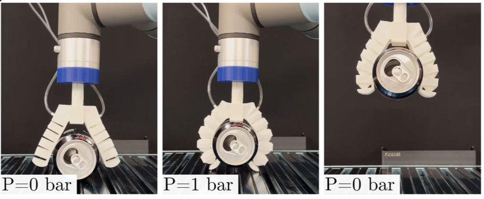
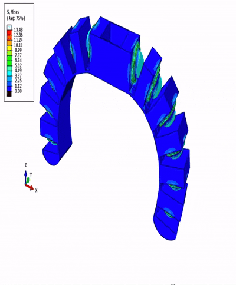
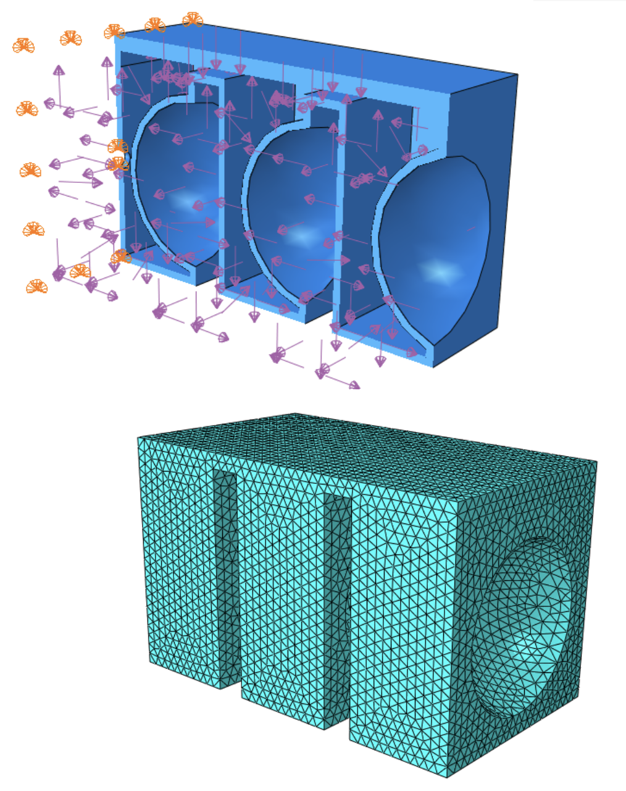
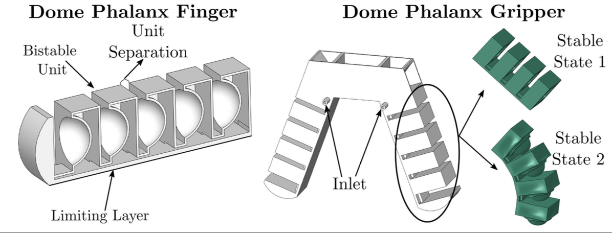
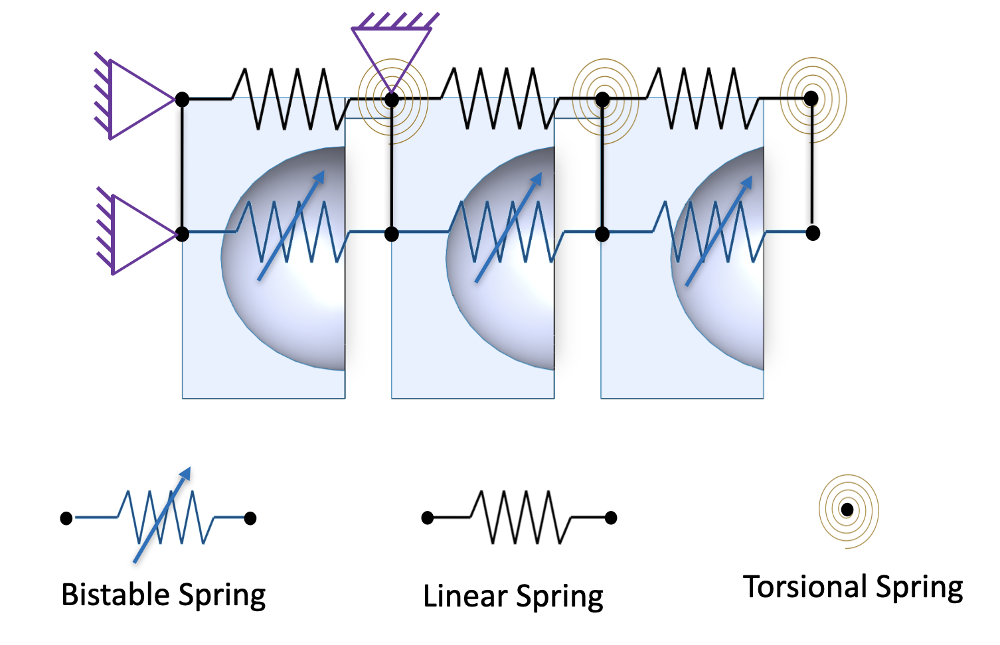
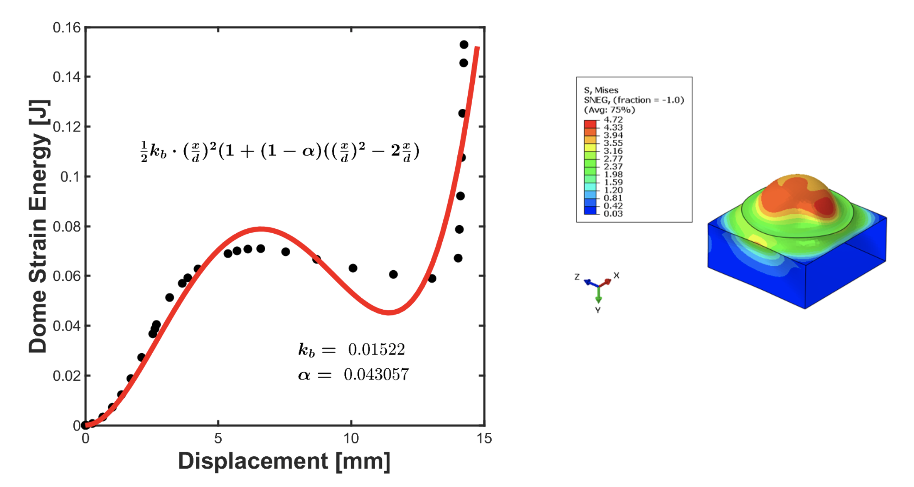
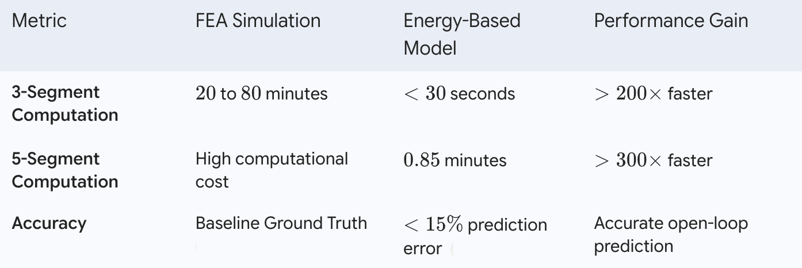

This project focus on a soft-robotic maniuplator design based on non-linear multi-stable geometry. I did this work in collaboration with Juan Camilo Osorio PhD; full publication available here. The multi-stable nature of the design allows the manipulator to remain engage even when external stimulus(ex. pressure, electrical signal, etc) is removed. This is a unique capability among soft-robotic manipulators.

Soft robotic manipulators are often modeled using Finite Element Analysis (FEA) to predict the kinematic configuration of the manipulator under various external stimuli. However, FEA is computationally expensive and slow, making it difficult to use in real-time applications. To address this issue, we developed a novel energy-based analytical model that can predict the kinematic configuration of the manipulator with high accuracy and at a fraction of the computational cost of FEA.

The Problem: The FEA Bottleneck
Simulating soft robotics presents challenges that standard computational methods struggle to process efficiently. The non-linear behavior of these grippers further complicates traditional analysis.

Hardware Design: 3D Printed Soft Manipulators
The design is entirely 3D printed, so fabrication is streamlined and adjustments for optimization can all be made in CAD. The novelty of employing mult-stable structures in a soft-robotic manipulator allows us to capture the many benefits of soft-robotic end-effectors(ex. compliance, adaptability, etc) while also simplifying the problem of control inherent to soft-robotics. Structurally programmed multistability opens to the possibility of open-loop control.

Software: The High-Speed Computational Model
To bypass the FEA bottleneck, the continuous structure is abstracted into a computationally efficient reduced-order model.


Validation and Benchmarking
The spring lattice model was strictly validated against commercial FE software (Abaqus) and experimental physical prototypes.

Applications & Future Work
This computational efficiency enables rapid, tractable searches of the configuration space for targeted design.